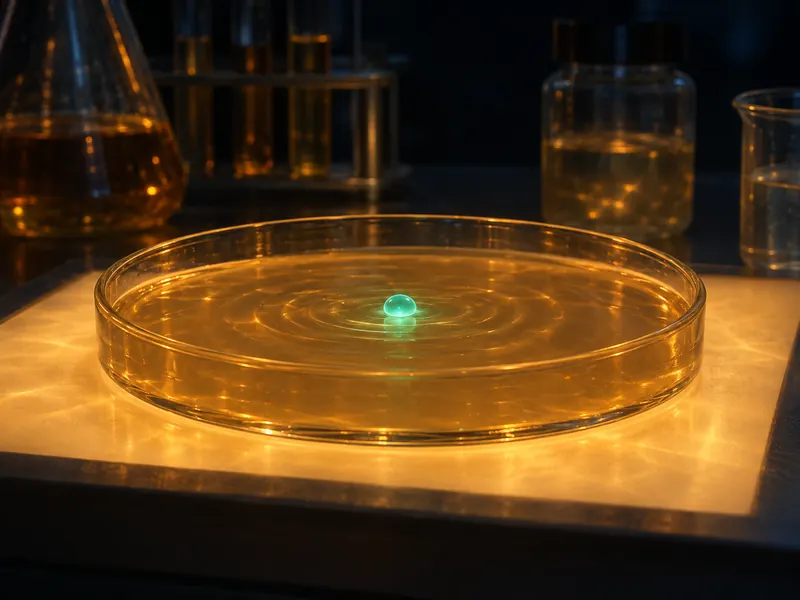
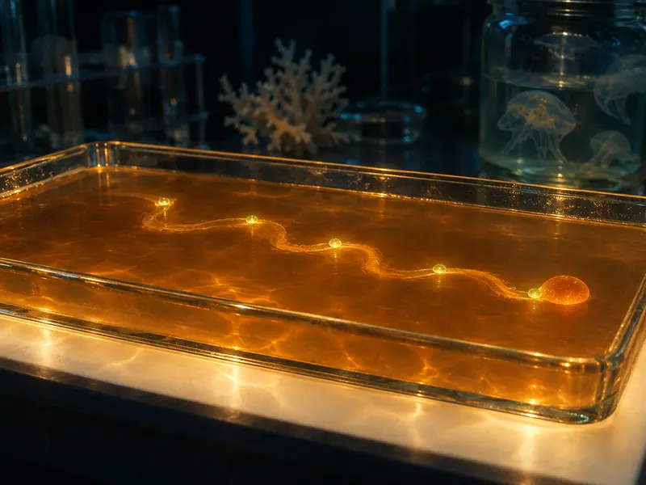
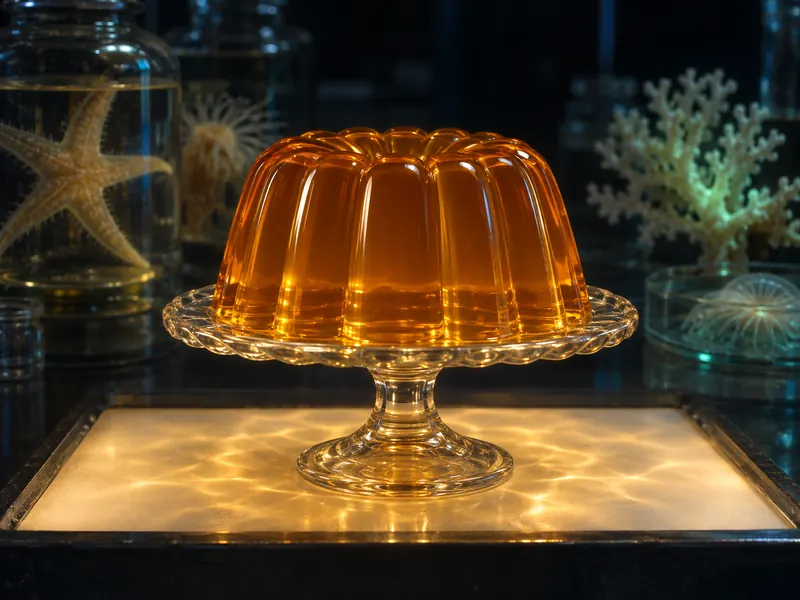

Specimen 01 · pre-alpha · a design, not yet a product
Ephyra is a design for self-driving software you host yourself. A production error becomes a trail: evidence, a failing repro, a patch, proof, and a landing on a forge you own. No pull request. You answer at the checkpoints; the rest sets by itself.

your app, in production ephyra
the agent · 8 arms · 1 pulse
Method
From a signal to a set, in six steps.
Each step leaves a record in git, so a trail can pause for a week, move machines, and pick up where it stopped.
-

01Catch a signal
Error spans, trace anomalies, a failed intent probe, a regression replay. Each is fingerprinted first; only new or re-rising fingerprints go on.
-
02
Merge the duplicates
Two cheap System One calls. Clairic pulls typed fields from the payload; Jev, or a d1 you host, answers six questions: actionable, duplicate, regression, conflict, severity, route.
≈ $0.49 per 10k signals · illustrative
-

03Lay a trail
A trail is a directory in git under
refs/ephyra/trails/<id>. Evidence comes from traces, the code graph, past trails, andentire searchover earlier agent sessions. -
04
Prove it
The repro fails at base and passes on the patch, in a devenv sandbox. UI changes bring Storybook or Textbook proof. Changes people see can bring a voxq study.
-
05
Ask a human
Checkpoints A, B and C arrive in a keyboard inbox: a r x t o. Your
autonomy.mddecides where the loop must wait. -

06Let it set
It lands as a trail ref, a Radicle patch, a Tangled pull or a Sapling stack. Then it is watched.
Watch
It sets. Or it slumps.
Landing is not the end. Ephyra watches the change for a window your policy sets. If any of these happen, it reverts through the same landing mode and reopens the trail one revision up, with the watch data as evidence.
- the original fingerprint comes back: three times, or once in a high-risk area
- a new fingerprint appears in the files it touched
- an intent probe for the area fails twice
- errors on touched routes stay above 1.5× baseline for ten minutes
Set.
- T-0193 · proof passed · landed as trail_ref · watch 2h
Autonomy
Firm core. Soft edges.
Humans harden the core; the edges can drive themselves. One plain-English file, ephyra/autonomy.md, binds areas to paths and says how far the loop may go alone. Every area starts in shadow mode: decisions are recorded, nothing lands without you, and a weekly would-approve report tells you when to flip it.
Forges
Your forge. Your box.
- Radicleas a patch
- Tangledas a pull
- plain gitas a branch
- Saplingas a draft stack
Trails live in git; a forge object only mirrors them. Run Ephyra from a Railway template with Railway Sandboxes for the repro, or on one devenv up on your own Nix box with Firecracker. No GitHub account required, no hosted model required.
sl goto + amend is a take-over.Not Organic for accounts and hosted System One calls · voxq for asking real people · bring your own keys, or host d1 yourself. Names set in our own type on purpose; none of these projects endorse Ephyra.
Jellyware
Hardware. Firmware. Software. Jellyware: software soft enough to reshape itself, and firm enough to trust. The pain of a bug is how bad it is times how long it lives in production. Ephyra works on the second number: land small, watch closely, unwind on its own.
“Jellyware” is Amp’s word, from Orbs and Jellyware, Raising an Agent S2E2, August 2026.
Borrowed, with thanks
- Macroscope Murmur
- events delivered to a still-running agent; approval policy in plain English
- PostHog self-driving
- a signals inbox, and checking for work already in flight
- Entire
- agent sessions as git refs; Trails as the unit of work instead of a PR
- HumanLayer
- research, plan, implement, with a human at each turn
- Amp
- jellyware, and production as a feedback loop
Follow along.
Ephyra is a design written on 6 November 2026. No line of it runs yet. The first dogfood target is voxq, on Radicle, devenv and Railway.